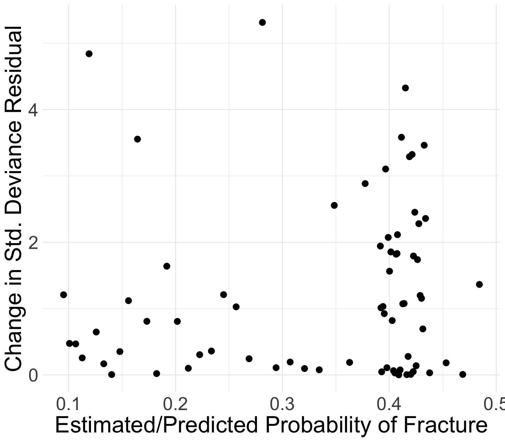

── Attaching core tidyverse packages ──────────────────────── tidyverse 2.0.0 ──
✔ dplyr 1.1.4 ✔ readr 2.1.5
✔ forcats 1.0.0 ✔ stringr 1.5.1
✔ ggplot2 3.5.1 ✔ tibble 3.2.1
✔ lubridate 1.9.3 ✔ tidyr 1.3.1
✔ purrr 1.0.2
── Conflicts ────────────────────────────────────────── tidyverse_conflicts() ──
✖ dplyr::filter() masks stats::filter()
✖ dplyr::lag() masks stats::lag()
ℹ Use the conflicted package (<http://conflicted.r-lib.org/>) to force all conflicts to become errors
here() starts at /Users/wakim/Library/CloudStorage/OneDrive-OregonHealth&ScienceUniversity/Teaching/Classes/S25_BSTA_513/S25_BSTA_513_siteLesson 14: Model Diagnostics
Learning Objectives
Understand the components of calculations for logistic regression diagnostics
Plot and determine observations where regression does not fit well or are influential using specific diagnostic values
Review of model assessment so far (1/2)
Overall measurements of fit
How well does the fitted logistic regression model predict the outcome?
Different ways to measure the answer to this question
| Measure of fit | Hypothesis tested? | Equation | R code |
|---|---|---|---|
| Pearson residual | Yes | \(X^2=\sum_{j=1}^{J}{r\left(Y_j,{\hat{\pi}}_j\right)^2}\) | Not given |
| Hosmer-Lemeshow test | Yes | \(\hat{C}=\sum_{k=1}^{g}\frac{\left(o_k-n_k^\prime{\bar{\pi}}_k\right)^2}{n_k^\prime{\bar{\pi}}_k(1-{\bar{\pi}}_k)}\) | hoslem.test() |
| AUC-ROC | Kinda | Not given | auc(observed, predicted) |
| AIC | Only to compare models | \(AIC = -2 \cdot \text{log-likelihood} + 2q\) | AIC(model_name) |
| BIC | Only to compare models | \(BIC = -2 \cdot \text{log-likelihood} + q\text{log}(n)\) | BIC(model_name) |
Review of model assessment so far (2/2)
Numerical problems
- Assess pre and post model fit
- Numerical problems often depend on the final model (which variables and interactions are included)
Different numerical problems to look out for
- Zero cell count
- Complete separation
- Multicollinearity
Today
- We now use model diagnostics to identify any observations that the model does not fit well
Learning Objectives
- Understand the components of calculations for logistic regression diagnostics
- Plot and determine observations where regression does not fit well or are influential using specific diagnostic values
Review of Number of Covariate Patterns
- Covariate patterns are the unique covariate combinations that are observed
For example: model contains two binary covariates (history of fracture and smoking status), there will be 4 unique combination of these factors
- This model has 4 covariate patterns
- Subjects can be divided into 4 groups based on the covariates’ values
- When we have continuous covariates, the number of covariate patterns will be close to the number of individuals in the dataset
From overall measure to diagnostics
Now we need to investigate diagnostics looking at individual data or covariate pattern data
- Make sure the overall measure has not been influenced by certain observations
The key quantities from logistic regression diagnostics are the components of “residual sum-of-squares”
The same idea as in the linear regression
Assessed for each covariate pattern \(j\), by computing standardized Pearson residuals and Deviance residuals
- Standardization using \(h_j\), the leverage values
Hat Matrix and Leverage Values: Linear regression
- We have learned “hat” matrix and leverage values from linear regression diagnostics
In linear regression, the hat matrix projects the outcome variable onto the covariate space:
- \(H=X\left(X^\prime X\right)^{-1}X^\prime\) and \(\hat{y}=Hy\)
- The linear regression residuals is thus \(y - \widehat{y}\), or \((I-H)y\)
- The leverage is just the diagonal elements of the hat matrix, which is proportional to the distance of \(x_j\) to the mean of the data \(\overline{x}\)
Hat Matrix and Leverage Values: Logistic regression
In logistic regression model, the hat matrix is: \[H=V^\frac{1}{2}X\left(X^\prime V\ X\right)^{-1}X^\prime V^\frac{1}{2}\]
The leverage is \[h_j=m_j\cdot\hat{\pi}\left(\textbf{x}_j\right)\left[1-\hat{\pi}\left(\textbf{x}_j\right)\right]\textbf{x}_j^\prime\left(\textbf{X}^\prime\textbf{VX}\right)^{-1}\textbf{x}_j=v_j\cdot b_j\]
\(b\): weighted distance of \(x_j\) from \(\overline{x}\)
\(v_j\): model based estimator of the variance of \(y_j\)
- \(v_j=m_j\cdot\hat{\pi}\left(\textbf{x}_j\right)\left[1-\hat{\pi}\left(\textbf{x}_j\right)\right]\)
\(h_j\) reflects the relative influence of each covariate pattern on the model’s fit
Poll Everywhere Question 1
Poll Everywhere Question 2
Diagnostic Statistics Computation (1/2)
Two diagnostic statistics computation approach
Approach 1: computed by covariate pattern
- Recommendation of Hosmer-Lemeshow textbook
- R uses this approach
- Identify outliers as group that shares the same covariate values (in the same covariate pattern)
Approach 2: individual observation approach
- SAS uses this approach
- Identify outliers as individual
Why prefer covariate patterns approach?
- When the number of covariate pattern is much smaller than n, there is risk that we may fail to identify influential and/or poorly fit covariate patterns using individual based on residual
Diagnostic Statistics Computation (2/2)
Consider a covariate pattern with \(m_j\) subjects, all did not have event (some \(y_i = 0\)). So the estimated logistic probability is \(\widehat\pi_j\)
Pearson residual computed by individual \[r_i=-\sqrt{\frac{{\hat{\pi}}_j}{(1-{\hat{\pi}}_j)}}\]
Pearson residual computed by covariate pattern \[r_i=-\sqrt{m_j}\sqrt{\frac{{\hat{\pi}}_j}{(1-{\hat{\pi}}_j)}}\]
Difference between aboveresiduals will be large if \(m_j\) is large: usually a problem if less covariate patterns
- Residual from covariate pattern will identify poorly fit covariate patterns
Diagnostics of Logistic Regression
Model diagnostics of logistic regression can be assessed by checking how influential a covariate pattern is:
Look at change in residuals if a covariate pattern is excluded
- Standardized Pearson residual
- Standardized Deviance residual
- Look at change in coefficients if a covariate pattern is excluded
Change of Standardized Residuals
Change in standardized Pearson Chi-square statistic due to deletion of subjects with covariate pattern \(x_j\): \[\Delta X_j^2 = r_{sj}^2 = \dfrac{r_j^2}{1-h_j}\]
Don’t need to know this: change in standardized deviance statistic due to deletion of subjects with covariate pattern \(x_j\): \[\Delta D_j = \dfrac{d_j^2}{1-h_j}\]
Refer to Lesson 12: Assessing Model Fit for expression of Pearson residual
Change of Estimated Coefficients
- Change in estimated coefficients due to deletion of subjects with covariate pattern \(x_j\): \[\Delta \widehat{\beta}_j = \dfrac{r_j^2 h_j}{(1-h_j)^2}\]
- This is the logistic regression analog of Cook’s influence statistic (in linear regression)
10 minute break
Learning Objectives
- Understand the components of calculations for logistic regression diagnostics
- Plot and determine observations where regression does not fit well or are influential using specific diagnostic values
Visual Assessment for Diagnostics of Logistic Regression (I)
In logistic regression, we mainly rely on graphical methods
- Because the distribution of diagnostic measures under null hypothesis (that the model fits) is only known in certain limited settings
Four plots for analysis of diagnostics in logistic regression:
- \(\Delta X_j^2\) vs. \({\hat{\pi}}_j\)
- \(\Delta D_j\) vs. \({\hat{\pi}}_j\)
- \(\Delta\widehat{\beta}_j\) vs. \({\hat{\pi}}_j\)
- \(h_j\) vs. \({\hat{\pi}}_j\)
Recall the model we fit: GLOW Study with interactions
Outcome variable: any fracture in the first year of follow up (FRACTURE: 0 or 1)
Risk factor/variable of interest: history of prior fracture (PRIORFRAC: 0 or 1)
Potential confounder or effect modifier: age (AGE, a continuous variable)
Fitted model with interactions: \[\begin{aligned} \text{logit}\left(\widehat\pi(\mathbf{X})\right) & = \widehat\beta_0 &+ &\widehat\beta_1\cdot I(\text{PF}) & + &\widehat\beta_2\cdot Age& + &\widehat\beta_3 \cdot I(\text{PF}) \cdot Age \\ \text{logit}\left(\widehat\pi(\mathbf{X})\right) & = -1.376 &+ &1.002\cdot I(\text{PF})& + &0.063\cdot Age& -&0.057 \cdot I(\text{PF}) \cdot Age \end{aligned}\]
- Lesson 12: determined the overall fit of this model
- Today: determine the if any observations/covariate patterns that model does not fit well
How do we get these values in R?
Nice function in the R script
Logistic_Dx_Functions.R- Highly suggest you save this R script for future use!!
source(here("lectures", "14_Model_diagnostics", "Logistic_Dx_Functions.R"))
dx_glow = dx(glow_m3)
glimpse(dx_glow)Rows: 71
Columns: 16
$ `(Intercept)` <dbl> 1, 1, 1, 1, 1, 1, 1, 1, 1, 1, 1, 1, 1, 1, 1, 1, 1…
$ priorfracYes <dbl> 1, 0, 1, 0, 1, 0, 0, 1, 1, 0, 0, 0, 0, 0, 1, 0, 0…
$ age_c <dbl> 1, -7, 7, -2, 10, 20, 1, -2, 2, 8, 18, -8, 11, 10…
$ `priorfracYes:age_c` <dbl> 1, 0, 7, 0, 10, 0, 0, -2, 2, 0, 0, 0, 0, 0, -3, 0…
$ y <dbl> 2, 2, 3, 2, 2, 1, 3, 3, 1, 5, 1, 3, 2, 1, 1, 4, 1…
$ P <dbl> 0.4088354, 0.1402159, 0.4162991, 0.1822879, 0.420…
$ n <int> 5, 15, 7, 10, 5, 2, 12, 8, 3, 15, 2, 18, 7, 4, 3,…
$ yhat <dbl> 2.0441770, 2.1032389, 2.9140936, 1.8228786, 2.100…
$ Pr <dbl> -0.04018670, -0.07677228, 0.06586860, 0.14507476,…
$ dr <dbl> -0.04023255, -0.07730975, 0.06577949, 0.14332786,…
$ h <dbl> 0.008844090, 0.003811004, 0.008725450, 0.00290085…
$ sPr <dbl> -0.04036559, -0.07691899, 0.06615786, 0.14528564,…
$ sdr <dbl> -0.04041165, -0.07745749, 0.06606836, 0.14353620,…
$ dChisq <dbl> 0.001629381, 0.005916530, 0.004376863, 0.02110791…
$ dDev <dbl> 0.001633102, 0.005999662, 0.004365028, 0.02060264…
$ dBhat <dbl> 1.453897e-05, 2.263418e-05, 3.852626e-05, 6.14091…Key to the values
colnames(dx_glow) [1] "(Intercept)" "priorfracYes" "age_c"
[4] "priorfracYes:age_c" "y" "P"
[7] "n" "yhat" "Pr"
[10] "dr" "h" "sPr"
[13] "sdr" "dChisq" "dDev"
[16] "dBhat" For each covariate pattern (which is each row) …
y: Number of eventsP: Estimated probability of eventsn: Number of observationsyhat: Estimated number of eventsPr: Pearson residualdr: Devianceh: leveragesPr: Standardized Pearson residualsdr: Standardized deviancedChisq: Change in standardized Pearson residualdDev: Change in standardized deviancedBhat: Change in coefficient estimates
Poll Everywhere Question 3
Visual Assessment for Diagnostics of Logistic Regression
The plots allow us to identify those covariate patterns that are…
Poorly fit
- Large values of \(\Delta X_j^2\) (and/or \(\Delta D_j\) if we looked at those)
Influential on estimated coefficients
- Large values of \(\Delta\widehat{\beta}_j\)
If you are interested to look at the contribution of leverage (ℎ_ùëó) to the values of the diagnostic statistic, you may also look at plots of:
- \(\Delta X_j^2\) vs. \({\hat{\pi}}_j\)
- \(\Delta D_j\) vs. \({\hat{\pi}}_j\)
- \(\Delta\widehat{\beta}_j\) vs. \({\hat{\pi}}_j\)
GLOW study: standardized Pearson residuals
Generally, the points that curve from top left to bottom right of plot correspond to covariate patterns with \(y_j = 1\)
- Opposite corresponds to \(y_j = 0\)
To make the plot
ggplot(dx_glow) + geom_point(aes(x=P, y=dChisq), size = 3) +
xlab("Estimated/Predicted Probability of Fracture") +
ylab("Change in Std. Pearson Residual") +
theme(text = element_text(size = 26))GLOW study: standardized Pearson residuals
Generally, the points that curve from top left to bottom right of plot correspond to covariate patterns with \(y_j = 1\)
- Opposite corresponds to \(y_j = 0\)
Points in the top left or top right corners identify the covariate patterns that are poorly fit
We may use 4 as a crude approximation to the upper 95th percentile for \(\Delta X_j^2\)
- 95th percentile of chi-squared distribution is 3.84
To make the plot
ggplot(dx_glow) + geom_point(aes(x=P, y=dChisq), size = 3) +
xlab("Estimated/Predicted Probability of Fracture") +
ylab("Change in Std. Pearson Residual") +
theme(text = element_text(size = 26))
GLOW study: standardized Pearson residuals
Generally, the points that curve from top left to bottom right of plot correspond to covariate patterns with \(y_j = 1\)
- Opposite corresponds to \(y_j = 0\)
Points in the top left or top right corners identify the covariate patterns that are poorly fit
We may use 4 as a crude approximation to the upper 95th percentile for \(\Delta X_j^2\)
- 95th percentile of chi-squared distribution is 3.84
Which point is over 4?
dx_glow %>% filter(dChisq > 4) %>% select(priorfracYes, age_c, P, dChisq) priorfracYes age_c P dChisq
<num> <num> <num> <num>
1: 0 -4 0.1643855 4.413937To make the plot
ggplot(dx_glow) + geom_point(aes(x=P, y=dChisq), size = 3) +
xlab("Estimated/Predicted Probability of Fracture") +
ylab("Change in Std. Pearson Residual") +
theme(text = element_text(size = 26))
GLOW study: standardized Deviance residuals
Same investigation as Pearson residuals
Points in the top left or top right corners identify the covariate patterns that are poorly fit
Use 4 as a crude approximation to the upper 95th percentile
Which point is over 4?
dx_glow %>% filter(dDev > 4) %>%
select(priorfracYes, age_c, P, dDev) priorfracYes age_c P dDev
<num> <num> <num> <num>
1: 0 -10 0.1190935 4.841217
2: 0 7 0.2812460 5.313540
3: 1 6 0.4150524 4.325664To make the plot
ggplot(dx_glow) + geom_point(aes(x=P, y=dDev), size = 3) +
xlab("Estimated/Predicted Probability of Fracture") +
ylab("Change in Std. Deviance Residual") +
theme(text = element_text(size = 26))
GLOW Study: Change in coefficient estimates
Book recommends flagging certain covariate patterns if change in coefficient estimates are greater than 1
All values of \(\Delta\widehat{\beta}_j\) are below 0.09
dx_glow %>% filter(dBhat > 0.075) %>%
select(priorfracYes, age_c, P, dBhat) priorfracYes age_c P dBhat
<num> <num> <num> <num>
1: 1 20 0.4325984 0.08926472To make the plot
ggplot(dx_glow) + geom_point(aes(x=P, y=dBhat), size = 3) +
xlab("Estimated/Predicted Probability of Fracture") +
ylab("Change in Coefficient Estimates") +
theme(text = element_text(size = 26))GLOW Study: Leverage
We can use the same rule as linear regression: \(h_j > 3p/n\)
- Flag these points as high leverage
Points with high leverage
- \(p=4\): four regression coefficients
- \(n=500\): 500 total observations
- Look for \(h_j > 3p/n = 3\cdot4 /500 = 0.024\)
dx_glow %>% filter(h > 3*4/500) %>%
select(priorfracYes, age_c, P, h) %>%
head() priorfracYes age_c P h
<num> <num> <num> <num>
1: 0 20 0.4686423 0.02688958
2: 1 -12 0.3928116 0.03186122
3: 0 19 0.4531105 0.02451738
4: 1 -11 0.3940365 0.02900675
5: 1 19 0.4313389 0.02895824
6: 1 18 0.4300804 0.02621708To make the plot
ggplot(dx_glow) + geom_point(aes(x=P, y=h), size=3) +
xlab("Estimated/Predicted Probability of Fracture") +
ylab("Leverage") +
theme(text = element_text(size = 26))Find Out the “Influential” Observation From the Data Set
- We identified covariate patterns that may be poorly fit or influential
- Let’s identify the covariate patterns that were not fit well
dx_glow %>% mutate(Cov_patt = 1:nrow(.)) %>%
filter(dChisq > 4 | dDev > 4 | dBhat > 1 |
h > 3*4/500) %>%
select(Cov_patt, y, P, h, dChisq, dDev, dBhat, h) %>%
round(., 3) Cov_patt y P h dChisq dDev dBhat
<num> <num> <num> <num> <num> <num> <num>
1: 6 1 0.469 0.027 0.008 0.008 0.000
2: 22 1 0.393 0.032 0.046 0.047 0.002
3: 36 1 0.453 0.025 0.178 0.183 0.004
4: 43 0 0.119 0.005 2.581 4.841 0.012
5: 45 6 0.164 0.003 4.414 3.554 0.014
6: 47 0 0.281 0.006 3.148 5.314 0.018
7: 48 0 0.394 0.029 0.670 1.032 0.020
8: 49 2 0.431 0.029 0.698 0.693 0.021
9: 50 0 0.430 0.026 0.775 1.155 0.021
10: 53 0 0.415 0.008 2.862 4.326 0.024
11: 57 2 0.395 0.026 0.949 0.924 0.026
12: 63 0 0.484 0.029 0.967 1.364 0.029
13: 69 0 0.434 0.035 1.588 2.358 0.058
14: 70 1 0.392 0.035 1.610 1.943 0.058
15: 71 2 0.433 0.032 2.710 3.462 0.089After identifying points
Do a data quality check
- Unless you have a very good reason to believe the data are not measured correctly, then we leave it in
- Common to do nothing
If only a few covariate pattern does not fit well (\(y_j\) differs from \(m_j\widehat\pi_j\) ), we are not too worried
- We had 15 out of 71 covariate patterns
If quite a few covariate patterns do not fit well, potential reasons can be considered:
The link used in logistic regression model is not appropriate for outcome
- This is usually unlikely, since logistic regression model is very flexible (think back to why we transformed our outcome from binary form)
One or more important covariates missing in the model
- At least one of the covariates in the model has been entered in the wrong scale (think age-squared vs. age)
How would I report this? (Combining all model assessment)
- Assuming I have not checked other final models (no other models to compare AIC/BIC or AUC with)
Methods: To assess the overall model fit, we calculated the AUC-ROC. We also calculated several model diagnostics including standardized Pearson residual, standardized deviance, change in coefficient estimates, and leverage. We identified covariate patterns with high standardized Pearson residual (greater than 4), standardized deviance (greater than 4), change in coefficient estimates (greater than 1), and leverage (greater than 0.024).
Results: Our final logistic regression model consisted of the outcome, fracture, and predictors including prior fracture, age, and their interaction. The AUC-ROC was 0.68. We identified 11 covariate patterns with high leverage and 4 with high standardized Pearson residual, standardized deviance, or change in coefficient estimates. No identified observations were omitted.
Discussion:
AUC-ROC low: Included covariates were pre-determined
Influential points were kept in because all observations were within feasible range of the predictors and outcome. (we could try age-sqaured and see if that helps AUC and/or diagnostics)